Контейнеры LXC в Linux
Инструкции Обновлено: 23 ноября, 2020 9 admin
Контейнеры Linux или LXC - это легкая технология виртуализации, которая может использоваться для решения различных задач. Технология встроена в ядро Linux и с помощью неё вы сможете запустить несколько дистрибутивов на одном компьютере или сервере практически без потерь производительности.
LXC можно расценивать как что-то среднее между изолированным окружением chroot и полноценной технологией виртуализации Qemu, Xen, KVM или VirtualBox. Поскольку все программы выполняются на реальном железе, без использования виртуализации, то вы не теряете производительность, в отличие от случая если бы вы использовали VirtualBox. Вы можете очень легко запустить параллельно несколько контейнеров в своей системе, даже при очень низких аппаратных ресурсах, чего нельзя сделать с полноценными технологиями виртуализации.
В этой небольшой статье мы рассмотрим как выполняется установка и настройка LXC в Ubuntu, а также как использовать эту технологию.
Перед тем как перейти к настройке давайте рассмотрим что из себя представляют контейнеры Linux. Как я уже сказал, это не совсем виртуализация, потому что все программы, которые выполняются внутри контейнера - работают на реальном железе и почти не теряют в производительности. Используется, только одно ядро, а для разграничения наборов процессов между собой применяются виртуальные окружения.
Виртуальные окружения создаются с помощью встроенных в ядро механизмов. Это в первую очередь улучшенный механизм chroot, который изолирует файловую систему контейнера от основной файловой системы. Но, как вы знаете в chroot есть один недостаток, вы не можете запустить систему инициализации, поскольку программа с таким PID уже существует, но это необходимо для управления процессами и службами.
Для решения этой проблемы используются пространства имен PID, с помощью этого механизма PID процессов контейнера не зависят от основной системы и других контейнеров, а поэтому мы можем очень просто запустить систему инициализации. Ну и наконец нужно управлять ресурсами, для этого используется механизм cgroups.
Благодаря всему этому потеря производительности при использовании контейнеров LXC Linux составляет не более 1%. Теперь, когда вы знаете как все это работает, перейдем к описанию процесса установки LXC.
В этой инструкции мы будем настраивать LXC в Ubuntu, поскольку это самая популярная операционная система, но все эти команды подойдут для всех других дистрибутивов. Отличие составляет только команда установки. Сначала нужно установить все необходимое программное обеспечение. Установка LXC на Ubuntu выполняется командой:
sudo apt install lxc lxc-templates uidmap
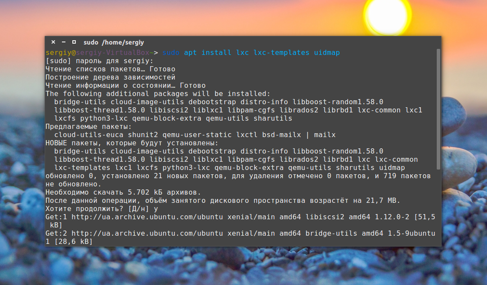
Дальше нужно задать базовые настройки, которые будут применяться для создания сети в контейнерах и установки других параметров. Сначала создаем папку с конфигурацией:
mkdir -p ~/.config/lxc
Настроим пользовательские пространства имен. Первая цифра означает первый UID пользователя linux в контейнере, вторая отвечающий ему UID пользователя в основной системе:
echo "lxc.id_map = u 0 100000 65536" >> ~/.config/lxc/default.conf
echo "lxc.id_map = g 0 100000 65536" >> ~/.config/lxc/default.conf
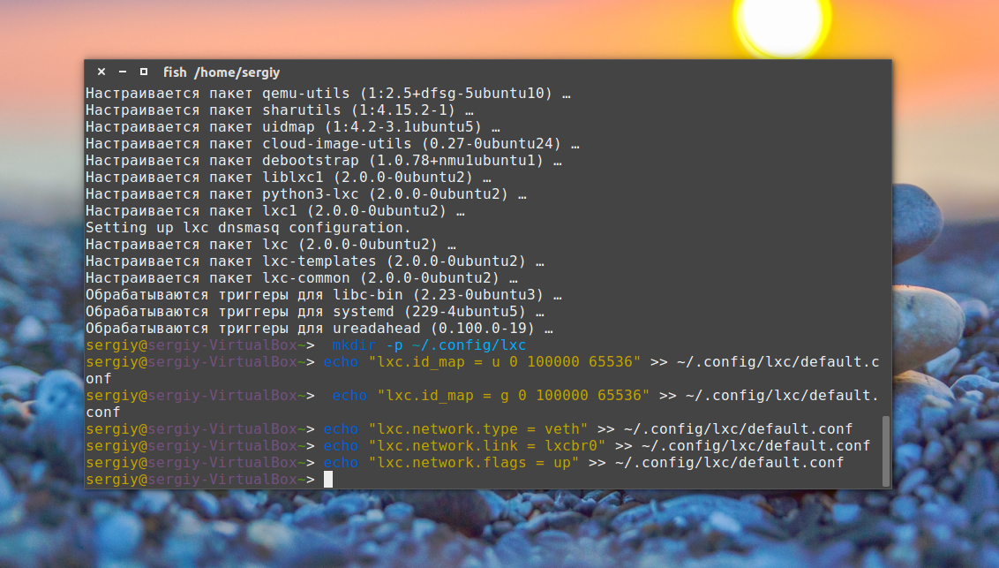
Дальше настраиваем сеть в контейнере:
echo "lxc.network.type = veth" >> ~/.config/lxc/default.conf
echo "lxc.network.link = lxcbr0" >> ~/.config/lxc/default.conf
echo "lxc.network.flags = up" >> ~/.config/lxc/default.conf
Затем в файле /etc/lxc/lxc-usernet нужно разрешить использовать сетевые интерфейсы текущему пользователю, чтобы получить возможность запускать контейнер без root прав:
echo "$USER veth lxcbr0 2" | sudo tee -a /etc/lxc/lxc-usernet
Для того чтобы пространства имен пользователей linux в контейнере работали нужно присвоить своему пользователю подпространство UID и GID 100000-165536:
sudo usermod --add-subuids 100000-165536 $USER
sudo usermod --add-subgids 100000-165536 $USER
И даем права на использование данного пользователя в cgm:
sudo cgm create all user
sudo cgm chown all user $(id -u) $(id -g)
cgm movepid all user $$
Теперь первоначальная настройка завершена и мы готовы перейти к загрузке и установке образа контейнера. Для установки в интерактивном режиме наберите такую команду, здесь ubu1, это имя будущего контейнера:
lxc-create --template download --name ubu1
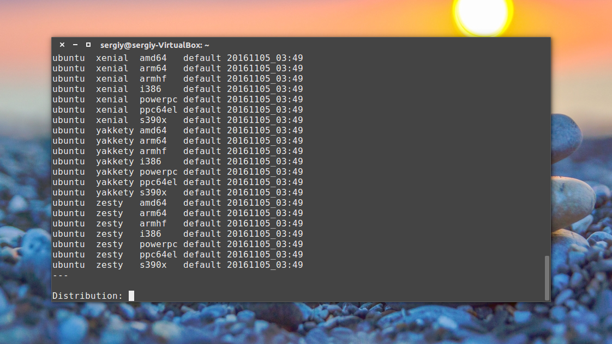
В этом списке вам предстоит выбрать нужную операционную систему. Просто введите необходимые параметры, имя, релиз и архитектура, выбрав их из списка доступных, например, для Ubuntu Yakkety Yak 64 бит:
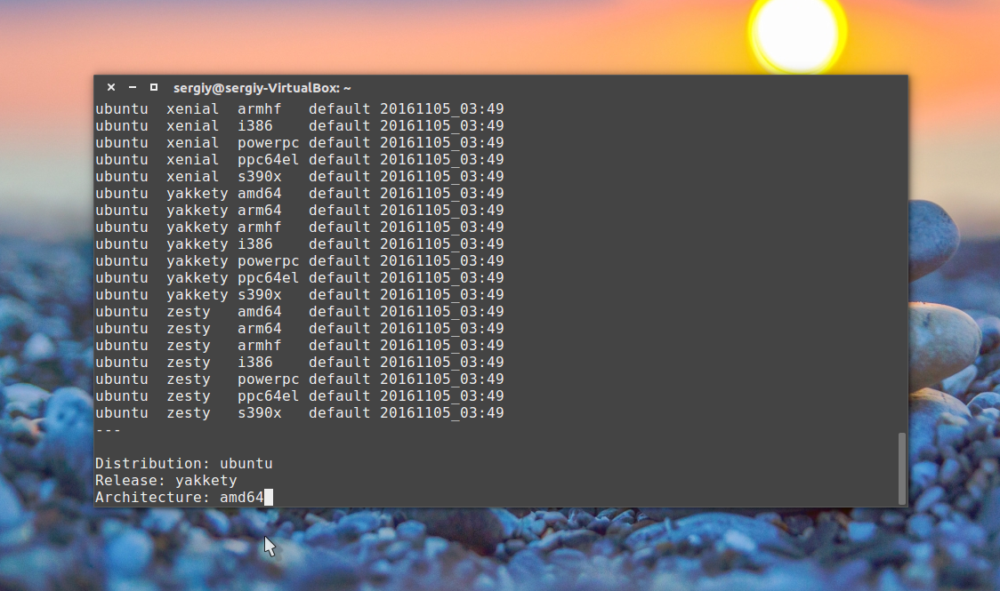
Затем начнется загрузка уже готового, настроенного образа из интернета. Это может занять довольно много времени если у вас медленный интернет.
Также вы можете использовать не интерактивный режим и указать все необходимые параметры сразу в командной строке:
lxc-create -t download -n ubu1 -- --dist ubuntu --release xenial --arch amd64
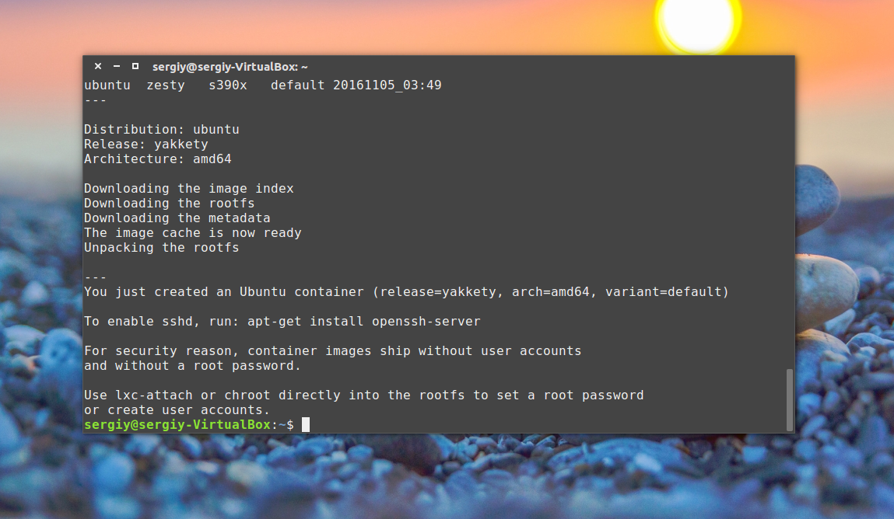
После завершения загрузки контейнера первоначальная установка будет завершена и мы можем перейти дальше.
После всех проделанных выше действий мы можем перейти к запуску контейнера. Для этого используйте команду lxc-start с именем вашего контейнера, например:
lxc-start -n ubu1 -d
Опция -n задает имя контейнера, в нашем случае - ubu1, а -d говорит утилите запуска, что нужно выполнять программу в фоновом режиме. Вы можете убедиться, что контейнер запущен с помощью такой команды:
lxc-ls -f
Тут опция -f включает более подробный вывод, в списке вы увидите только что установленный контейнер и его состояние будет запущен.
Чтобы подключиться к терминалу контейнера используйте команду lxc-attach:
lxc-attach -n ubu1
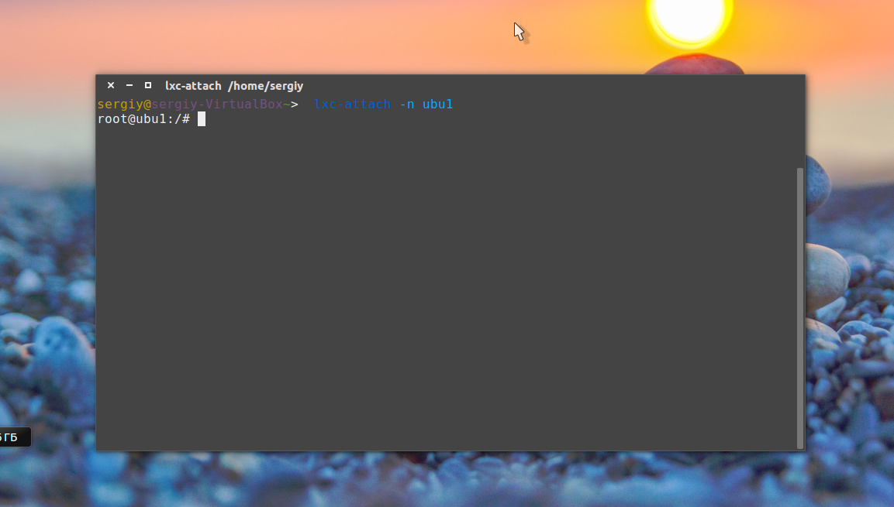
После подключения вы получаете полный root доступ к файлам в контейнере, дальше рекомендуется задать пароль root и создать пользователя:
passwd
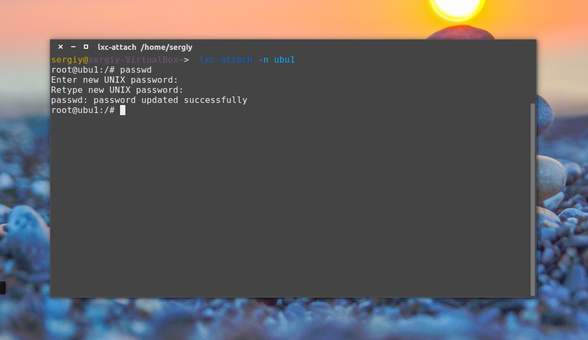
adduser losst
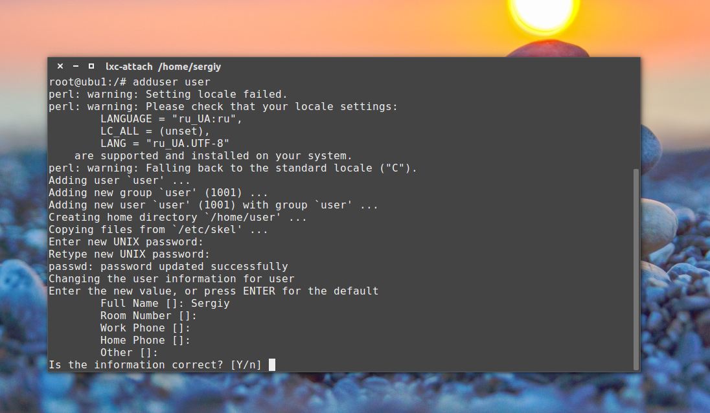
Настройка системы или установка программ выполняется точно так же, как и в обычной системе, например установка программ:
apt install wget openssh-server htop tmux nano iptables
Когда вы завершили все работы в контейнере, его можно выключить, чтобы он не отнимал системные ресурсы. Для этого выполните:
lxc-stop -n ubu1
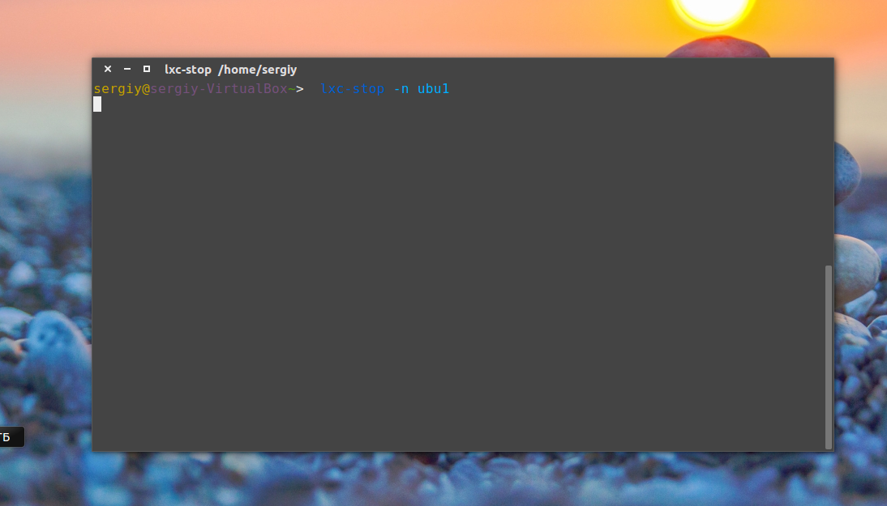
Эта команда проведет правильное завершение работы контейнера и он больше не будет потреблять ресурсов системы, кроме дискового пространства.
После того как вы установили все необходимые программы в контейнере и настроили его как нужно, можно создать несколько его копий для упрощения настройки новых контейнеров и экспериментов. Для этого есть команда clone, которая создает полную копию контейнера:
Для примера давайте создадим клон контейнера ubu1 с именем ubu2. Сначала нужно остановить контейнер:
lxc-stop -n ubu1
Затем можно клонировать. Опция -n указывает контейнер источник, а -N - имя нового контейнера:
lxc-copy -n ubu1 -N ubu2
Затем вы опять можете использовать lxc-ls, чтобы убедится, что контейнер был создан:
lxc-ls -f
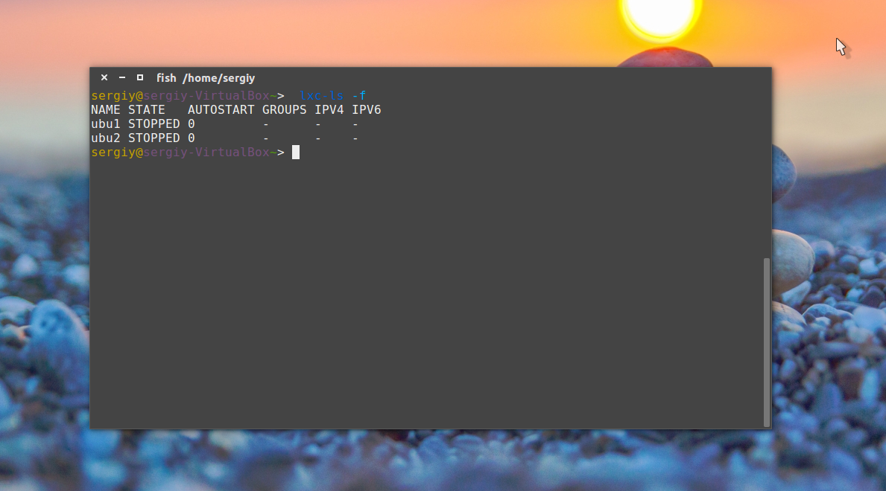
Если вы хотите экспериментировать с контейнером, вносить какие-либо изменения, которые будет трудно исправить, то можно сделать снимок контейнера, чтобы потом вернуть все как было, с помощью одной команды восстановив снимок. Чтобы создать снимок тоже нужно остановить контейнер:
lxc-stop -n ubu1
Затем используйте команду lxc-snapshot для создания снимка:
lxc-snapshot -n ubu1
Будет создан снимок с именем snap0, следующие снимки для этой же машины будут называться snap1, snap2, и так далее. Вы можете восстановить состояние контейнера до снимка в любой момент, для этого используйте опцию -r:
lxc-snapshot -r snap0 -n ubu1
Вам нужно указать имя снимка и имя контейнера.
Запуск контейнера при старте системы
Вы можете настроить запуск контейнера автоматически при старте системы, например, для запуска веб-сервера. Для этого откройте файл конфигурации контейнера и добавьте такие строки:
vi ~/.local/share/lxc/имя_контейнера/config
lxc.start.auto = 1
lxc.start.delay = 5
Первая строка означает, что контейнер нужно запускать при старте системы,а вторая указывает, что нужно подождать пять секунд перед запуском следующего контейнера, если такие есть.
Если у вас возникнут проблемы с запуском контейнеров, первое что нужно сделать, это попытаться запустить контейнер lxc с опцией -F, запуск не будет отправлен в фоновый режим и вы увидите все ошибки:
lxc-start -n ubu1 -F
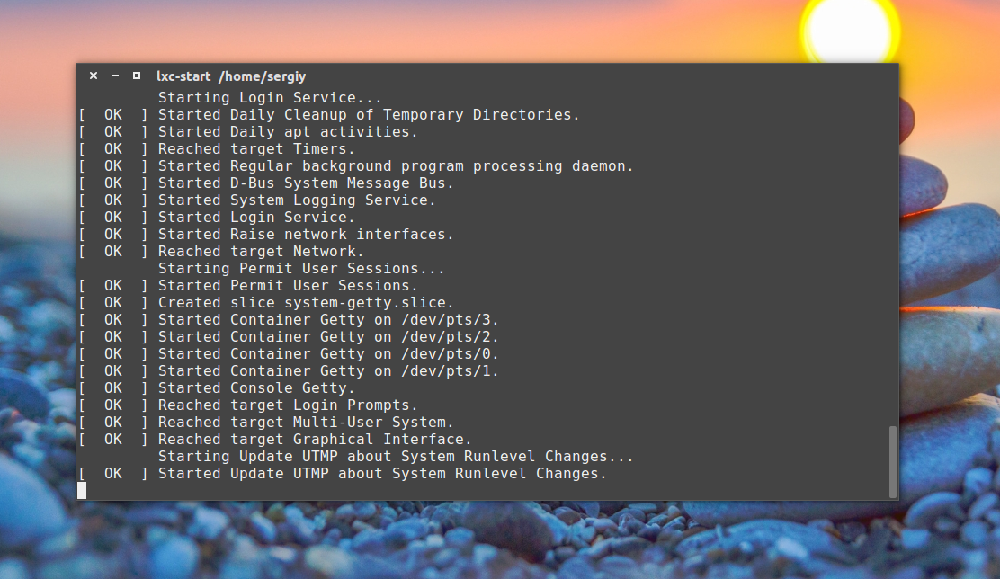
Проанализировав вывод команды, вы сможете понять в чем дело и исправить проблемы. Если вы пытаетесь запустить несколько контейнеров одновременно, то можете получить ошибки типа "Quota reached" или "failed to create the configured network". Это потому что вы используете больше сетевых интерфейсов, чем было разрешено. Мы задавали этот параметр в файле /etc/lxc/lxc-usernet. Вначале мы усказали, что можно использовать два сетевых интерфейса, но можно сделать 5:
sudo vi /etc/lxc/lxc-usernet
losst veth lxcbr0 5
Вы можете указать любое нужное число, в зависимости от того сколько контейнеров вам понадобится.
Контейнеры Linux можно использовать для решения огромного количества задач. Начиная от средства тестирования настроек или нового программного обеспечения и до изоляции своих приложений для обеспечения максимальной безопасности системы. Обратите внимание, что вы даже можете запускать приложения с графическим интерфейсом с помощью контейнеров.
Установка и настройка LXC Linux полностью рассмотрена и я надеюсь, теперь вам стало понятнее как работать с этой технологией. Ее полезность ограничена только вашей фантазией, так что не бойтесь экспериментировать. Если остались вопросы по настройке контейнеров, спрашивайте в комментариях!
На завершение видео с конференции LinuxPiter, где рассказывается подробно что такое контейнеры Linux и действительно ли они настолько безопасны: